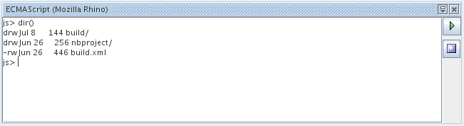

Script Console
Script consoles opens a console to a particular scripting engine. The console looks like below:

A console can be identified by its prompt. The prompt is the official
suffix recognized by a particular script engine. In the console shown
above, 'js' indicates that this is a JavaScript engine. The button on
the right of the button has the following function:
 Log button. Click on this button, an you will be prompted to enter a
log file name. After you have entered a valid log file, all subsequent
output and results in that console will be logged into that file. The
log button is a toggle button. Click on the log button to stop logging.
You can also programmatically turn logging on or off. See Programmable Objects.
Log button. Click on this button, an you will be prompted to enter a
log file name. After you have entered a valid log file, all subsequent
output and results in that console will be logged into that file. The
log button is a toggle button. Click on the log button to stop logging.
You can also programmatically turn logging on or off. See Programmable Objects. Clear button. Clears the console.
Clear button. Clears the console.
All console environment contained and will not interfere with other opened console.
You can initialize a console by creating a file call
globals.<suffix> in script_repository_home/console directory. The
<suffix> is the suffix that is officially recognized by a
particular script engine. To find out what suffix an engine supports
here is what you need to do:
- Open NetBeans' property window (Windows -> Properties).
- Open the Scripting Environment window (Scripts -> Scripting Environment).
- Expand the 'Script Languages' node, and select the engine that you want to find the suffix of.
- Look at the Suffix property in the Properties window. Some
engines support more that on suffix. In this case, all the suffix will
be separated by a space.
You can put any script command into globals.<suffix>. The
globals.<suffix> file will be execute before the script console
is displayed. Think of the globals.<suffix> file as the .profile
for Bourne shell.
JavaScript Console
JavaScript console is the best supported console. When you open a JavaScript console, the following are provided:
- init.js from jrunscript
- A list of redefined JavaScript command. Type 'help()' in the
console to get a list of predefined command besides those from init.js
Console Object
All open console has an object call 'Console' which can be used by scripts to control the console instance. See Programmable Objects for more information.